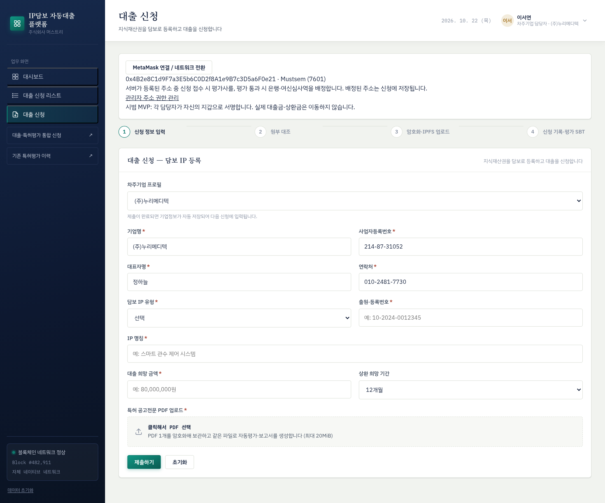
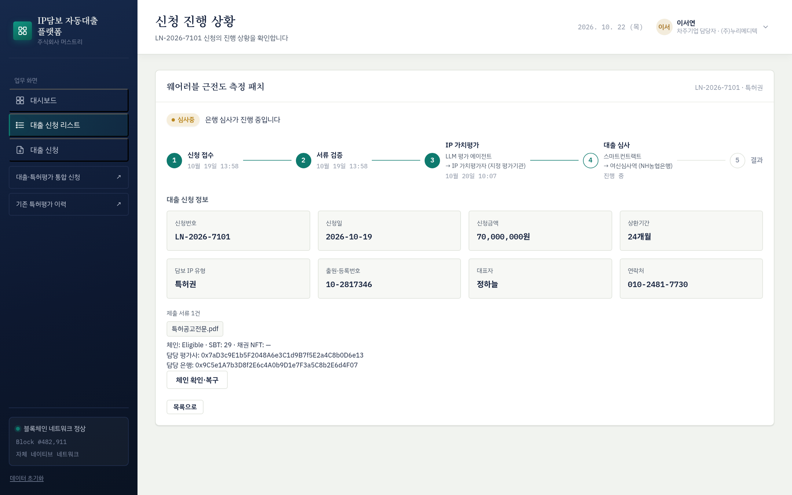
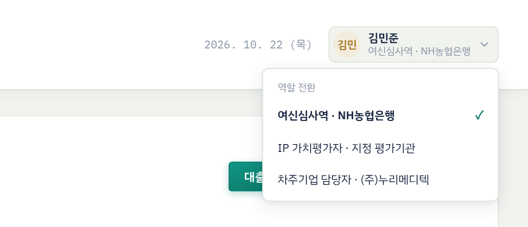

모든 참여기관이 공통으로 알아야 할 서비스 구조, 참여 주체, 업무 흐름과 상태 체계, 지갑·네트워크 준비 방법, 보안 수칙을 설명한다.
IP담보 자동대출 플랫폼은 중소기업이 보유한 특허권을 담보로 대출을 신청하면 LLM 평가 엔진이 특허 가치평가보고서를 자동으로 만들고, 지정 평가기관의 평가사가 이를 검토·확정한 뒤, 스마트컨트랙트가 담보인정비율(LTV)을 판정하고, 은행 여신담당자가 최종 승인하는 시스템이다. 신청부터 승인·상환까지의 주요 결정은 블록체인에 기록되므로 참여기관이 같은 기록을 확인할 수 있다.
| 구성 요소 | 역할 |
|---|---|
| 웹 서비스 | 차주기업·평가사·여신담당자가 쓰는 업무 화면(https://iploan.mustree.kr) |
| 플랫폼 서버 | 제출 문서 암호화·보관, 평가 접수, 담당자 배정, 블록체인 기록 검증과 화면 동기화 |
| LLM 평가 엔진 | 특허 공고전문 PDF로 평가보고서와 근거자료를 만드는 외부 보고서 생성 서비스 |
| 블록체인(Mustsem) | 신청·평가·승인·상환 기록과 평가 SBT·채권 NFT 발급을 처리하는 스마트컨트랙트 |
| IPFS | 암호화된 원본 문서와 암호화된 평가 확정 내용을 보관하는 분산 저장소 |
| MetaMask 지갑 | 참여자 본인 확인(서명)과 블록체인 거래 승인에 쓰는 브라우저 지갑 |
| 참여 주체 | 시스템 역할 | 주요 업무 |
|---|---|---|
| 차주기업 | 차주 BORROWER_ROLE | 대출 신청, 특허 공고전문 PDF 제출, 신청 등록 거래, 진행 상황 확인 |
| 플랫폼 운영사 주식회사 머스트리 | 관리자 DEFAULT_ADMIN_ROLE | 참여자 지갑 권한 등록·회수, 시스템 운영과 장애 대응, 평가 서비스 연계, 기관 간 통보 |
| LLM 평가 엔진 | 서버 연동 지갑 없음 | 평가보고서·근거자료 자동 생성, 작업 상태 제공 |
| IP 가치평가기관 지정 평가기관 평가사 | 평가사 EVALUATOR_ROLE | 보고서 검토, 적용 가치·검토 사유 확정, 평가 중 원본 열람 |
| NH농협은행 여신심사역 | 은행 BANK_ROLE | 여신 검토, 최종 승인·거절, 상환 기록, 승인 후 원본 열람 |
| No | 단계 | 처리 주체 | 처리 내용 | 블록체인 기록 |
|---|---|---|---|---|
| 1 | 대출 신청 | 차주기업 | 기업·특허·대출 정보 입력, 특허 공고전문 PDF 제출, 신청 내용 지갑 서명 | — |
| 2 | 문서 보관·배정 | 플랫폼 | PDF를 AES-256-GCM으로 암호화해 IPFS에 보관, 담당 평가사 배정, 평가 서비스 접수 | — |
| 3 | 신청 등록 | 차주기업 | 신청 등록 거래 승인 | 신청 기록, 담당 평가사에게 평가 SBT 발급 |
| 4 | 보고서 생성 | LLM 평가 엔진 | 평가보고서·근거자료와 자동 산출 가치 생성 (통상 10분 내외, 대기열에 따라 지연) | — |
| 5 | 평가 검토·확정 | 평가사 | 보고서 검토, 적용 가치와 검토 사유 입력, 서명 후 확정 거래 승인 | 평가 기록, SBT 소각, LTV 판정, 통과 시 담당 은행 고정 |
| 6 | 자동심사 | 스마트컨트랙트 | 신청금액 ≤ 적용 가치 × 70%이면 통과, 아니면 자동 거절로 종료 | |
| 7 | 여신 검토·결정 | 여신담당자 | 보고서·신용등급·재무 검토 후 최종 승인 또는 거절 거래 승인 | 승인 시 담당 은행에게 채권 NFT 발급 |
| 8 | 채권 기록 | 스마트컨트랙트 | 승인 건의 채권 NFT 발급 | |
| 9 | 상환 기록 | 여신담당자 | 은행 시스템에서 수납을 확인한 상환 내역을 기록 | 상환 누적, 완납 시 상태 변경 |


차주기업은 신청 화면에서 기업정보·특허정보·신청금액·상환 희망 기간(12·24·36개월)을 입력하고 공고전문 PDF 1개(최대 20MiB)를 제출한다. 진행 상황 화면에는 신청 접수 → 서류 검증 → IP 가치평가 → 대출 심사 → 결과의 5단계가 표시된다. 차주기업의 문의를 받으면 이 화면 기준으로 안내한다.
신청의 공식 상태는 블록체인에 기록된 온체인 상태다. 웹 화면의 상태 표시는 온체인 상태와 평가 작업 상태를 합쳐 보여준다.
| 온체인 상태 | 의미 | 목록 화면 표시 | 평가 SBT | 채권 NFT | 다음 처리자 |
|---|---|---|---|---|---|
| None | 문서 보관 완료, 신청 등록 거래 전 | 서류검증 | 없음 | 없음 | 차주 |
| Evaluating | 신청 등록 완료, 평가 진행 중 | 평가중 · 평가사 검토 대기 · 평가 생성 실패 · 서류검증 | 담당 평가사 보유 | 없음 | 평가사 |
| Eligible | 평가 확정, LTV 통과, 담당 은행 고정 | 심사중 | 소각 | 없음 | 여신담당자 |
| RuleRejected | 평가 확정, LTV 미통과 | 거절 | 소각 | 없음 | — (종료) |
| Approved | 은행 최종 승인 | 승인 | 소각 | 담당 은행 보유 | 여신담당자 (상환) |
| Rejected | 은행 최종 거절 | 거절 | 소각 | 없음 | — (종료) |
| Repaid | 원금 전액 상환 기록 | 승인 | 소각 | 담당 은행 보유 유지 | — (종료) |
| 네트워크 이름 | Mustsem |
|---|---|
| 체인 ID | 7601 |
| RPC URL | https://block.mustree.kr |
| 통화 기호 | MST |
처음 거래를 실행하면 MetaMask가 네트워크 추가·전환을 요청한다. 위 값과 같은지 확인한 뒤 승인한다.

화면 오른쪽 위 사용자 영역을 눌러 역할을 고른다. 여신심사역 · NH농협은행, IP 가치평가자 · 지정 평가기관, 차주기업 담당자 중 하나를 선택하면 왼쪽 메뉴가 역할에 맞게 바뀐다. 역할 선택은 화면 구성만 바꾼다. 실제 처리 권한은 지갑에 등록된 역할과 신청별 배정으로 확인한다.
| 구분 | MetaMask 표시 | 비용 | 쓰는 업무 |
|---|---|---|---|
| 서명 | 메시지 서명 요청 | 없음 | 신청 내용 확인, 평가 확정 내용 확인, 원본 열람, 평가 재시도·사업자번호 확인·접수 복구 |
| 거래 | 트랜잭션 확인 (가스 요금 표시) | MST 가스 | 신청 등록, 평가 확정, 최종 승인·거절, 상환 기록, 권한 추가·회수 |
| 역할 | 업무 | 서명 | 거래 |
|---|---|---|---|
| 차주 | 대출 신청 제출과 신청 등록 | 1 | 1 |
| 평가사 | 평가 검토·온체인 확정 | 1 | 1 |
| 특허 원본 확인 | 1 | — | |
| 평가 재시도 · 사업자번호 확인 · 접수 복구 | 1 | — | |
| 여신담당자 | 최종 승인 또는 최종 거절 | — | 1 |
| 상환 기록 (1회당) | — | 1 | |
| 원본 열람 | 1 | — | |
| 관리자 | 지갑 주소 권한 추가 또는 회수 | — | 1 |